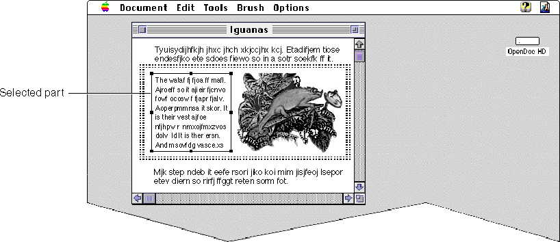
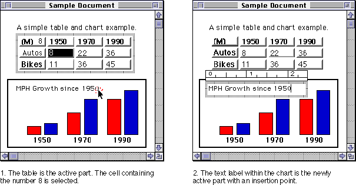

Activation
This section describes when part activation and window activation should occur, and what kind of user feedback should accompany each.Activating Parts
This section notes the basic user interactions that result in the activation or deactivation of a part. For detailed descriptions of how your part editor must respond to mouse-up and mouse-down events to implement these behaviors, see the section "Mouse Events, Activation, and Dragging".Before editing content in a part, the user activates it by clicking in the part. A part is active when it contains a selection or an insertion point. The part activates itself by obtaining the selection focus (plus, usually, the key focus and the menu focus); only one part is active at a time. When a part is active, its part editor controls the menu bar and any associated windows, such as dialog boxes, palettes, or tool bars.
Because OpenDoc uses an inside-out activation model, the user's first click in a document activates the most deeply nested part at the pointer location and sets a selection in it. This way, the user can begin interacting with the part immediately to create or change content or make a selection. Figure 1-13 shows an example of inside-out activation.
OpenDoc displays the active frame border around an active part; neither the active part nor its containing part need draw the border. If the active part is the root part, however, OpenDoc does not draw the border. In this case, the active border is not needed; the active window appearance takes its place. Figure 12-17 shows in detail the appearance of the active frame border.
Complete part activation might occur only when the mouse button is released. When a mouse-down event occurs in an inactive part, the part can display a pointer, caret, or selection feedback, and interaction (such as dragging) can take place. To prevent unnecessary redrawing of the screen, the menus, palettes, and other user-interface elements associated with activation don't appear until a mouse-up event occurs. See the section "Using Drag and Drop" for guidelines on what should occur when a user initiates a drag operation.
While your part is active, it must show appropriate behavior:
Figure 13-2 A selected embedded part in an active part
- It must enable certain menu items; see "Menus".
- It must follow the selection behavior shown in "Selection".
- If the user clicks in the menu bar, scroll bar, tool bar, or other user-interface element of your part, your part remains active. The active state of a part changes only when a user clicks in the content of an inactive part.
- Likewise, when the user selects an embedded part in your active part, your part remains active and shouldn't relinquish the menus. Figure 13-2 shows a selected text part embedded in a graphics part. Note that the menu bar is under the control of the graphics part editor because it is still the active part.

Your part deactivates itself when another part activates itself. If the user clicks in a different part, your part relinquishes the selection focus. The other part becomes active when the user releases the mouse button. The newly active part displays its menus and palettes. Figure 13-3 shows this behavior.Figure 13-3 Changing the active part

Activating Windows
This section notes the basic user interactions that result in the activation or deactivation of a window. For detailed descriptions of how your part editor must respond to mouse-up and mouse-down events to implement these behaviors, see the section "Mouse Events, Activation, and Dragging".A user click makes a window active if (1) the user presses the mouse button within a background selection (or any single-click-selectable item, such as an icon) in a part in an inactive window, and (2) no pointer movement occurs (the user does not initiate a drag operation). In this case, the window is activated when the user releases the mouse button. Subsequently, the previously active part in the window (which may or may not have been the part that received the click) activates itself, displaying its menus and palettes and selection, as appropriate. The user must click again to change the selection or activate a different part.
If the user presses the mouse button in a part in an inactive window but outside of any background selection, the window is activated when the user releases the mouse button, regardless of whether pointer movement occurred before the mouse up.